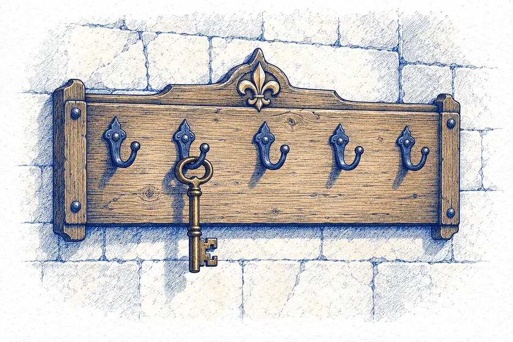

Приближённые

Пока у двора только хозяин

На ключнице один ключ — ваш. Примите ко двору семью или друзей: у каждого будет свой ключ и свои мешки.


На ключнице один ключ — ваш. Примите ко двору семью или друзей: у каждого будет свой ключ и свои мешки.